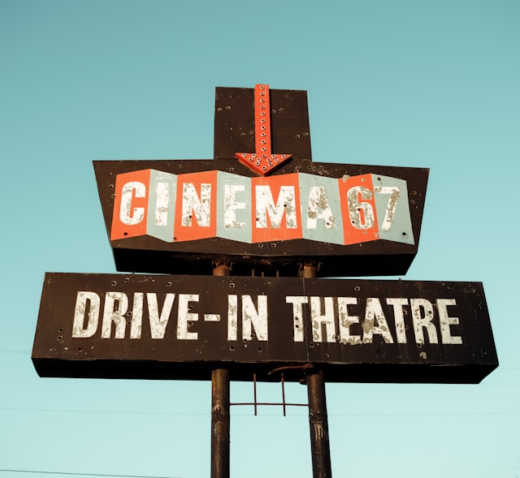
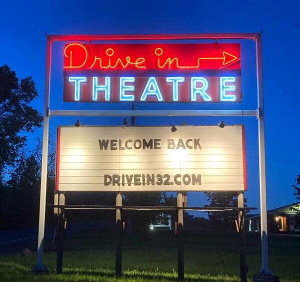
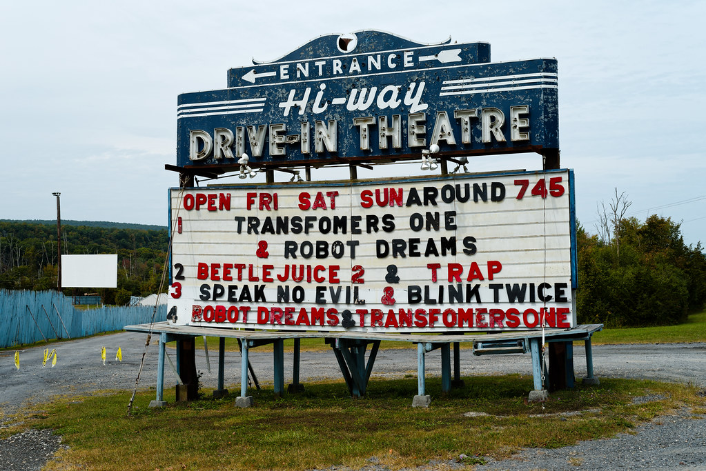

A Little Tribute to Drive-In Theaters

Drive-in movie theaters have this perfect mix of nostalgia, fresh air, and
flickering light. It's a simple idea—watching a film from your car—but
somehow it feels more like an event than just “going to the movies.”
What Is a Drive-In Theater?
A drive-in theater is an outdoor movie theater where you park your car in
front of a huge screen, tune in to the sound (through a speaker or your
car radio), and watch the movie under the open sky. You’ve got your own
space, your own snacks, and a whole lot of atmosphere.
Why Drive-Ins Are Special
Here's what makes drive-ins feel different from a regular theater:
- You can bring your own blankets, pillows, and snacks.
-
The sky, the weather, and the surroundings become part of the
experience.
-
It feels more relaxed—talk quietly, stretch out, sit outside if you
want.
-
There's a sense of old-school charm you just don't get in a modern
multiplex.
My Perfect Drive-In Night
If I could design the perfect drive-in evening, it would probably look
like this:
-
Arrive before sunset to get a good spot and watch the sky change colors.
-
Set up a cozy spot with a blanket, camp chairs, and a small cooler.
- Grab something warm to eat—chili, popcorn, or a good burger.
-
Turn up the sound, roll the windows down just a bit, and get lost in the
movie.
-
Drive home in the dark with that quiet, satisfied feeling after a good
story.
Why This Page Exists
This is a small tribute to a simple idea that still feels magical:
watching a movie with other people, out in the open, under the night sky.
Drive-ins are part movie, part memory machine—and I hope they stick around
for a long time.
Two of my Favorite Drive in Theaters

'Cinema with a Twist' in the New York's scenic Northern Catskills

The Hi-Way Drive-In was originally built in 1950 by brothers Morris and
Rafael Klein, who owned several movie theatres in the area.